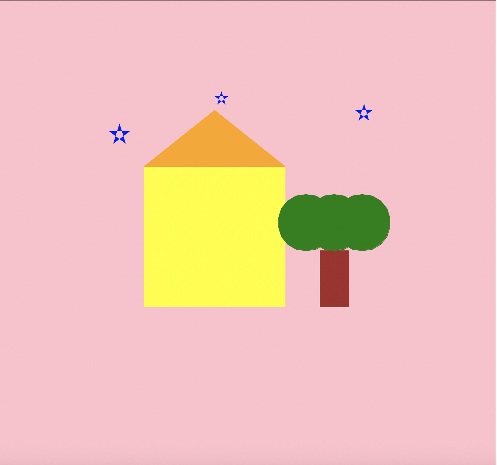

This project uses Python’s Turtle graphics module to create a small scene with a house, a tree, and stars in the sky. The turtle draws shapes using loops, colors, and positioning to build a simple landscape.
import turtle
# Screen setup
screen = turtle.Screen()
screen.bgcolor("pink")
t = turtle.Turtle()
t.speed(0)
# Draw house
t.penup()
t.goto(-150,-100)
t.pendown()
t.color("yellow")
t.begin_fill()
for _ in range(4):
t.forward(200)
t.left(90)
t.end_fill()
# Roof
t.penup()
t.goto(-150,100)
t.pendown()
t.color("orange")
t.begin_fill()
t.forward(200)
t.goto(-50,180)
t.goto(-150,100)
t.end_fill()
# Draw tree
# Trunk
t.penup()
t.goto(10,-100)
t.setheading(90)
t.pendown()
t.color("brown")
t.begin_fill()
for _ in range(2):
t.forward(40)
t.left(90)
t.forward(80)
t.left(90)
t.end_fill()
# Leaves
t.color("green")
for x in [80,120,160]:
t.penup()
t.goto(x,20)
t.pendown()
t.begin_fill()
t.circle(40)
t.end_fill()
# Draw stars
t.color("blue")
def star(x,y,size):
t.penup()
t.goto(x,y)
t.pendown()
t.begin_fill()
for _ in range(5):
t.forward(size)
t.right(144)
t.end_fill()
star(-200,150,30)
star(-50,200,20)
star(150,180,25)
t.hideturtle()
turtle.done()

When this program runs, Turtle graphics draws a house with a colored roof, a tree with leaves, and several stars in the sky. The shapes are created using loops and functions to keep the code organized.